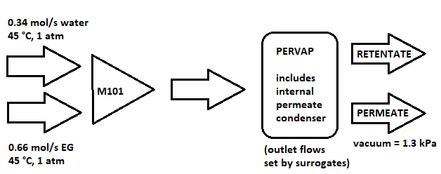

IDAES Skeleton Unit Model¶
This notebook demonstrates usage of the IDAES Skeleton Unit Model, which provides a generic “bare bones” unit for user-defined models and custom variable and constraint sets. To allow maximum versatility, this unit may be defined as a surrogate model or a custom equation-oriented model. Users must add ports and variables that match connected models, and this is facilitated through a provided method to add port-variable sets.
For users who wish to train surrogates with IDAES tools and insert obtained models into a flowsheet, see more detailed information on IDAES Surrogate Tools.
1. Motivation¶
In many cases, a specific application requires a unique unit operation
that does not exist in the IDAES repository. Custom user models may
source from external scripts, import surrogate equations or use
first-principles calculations. However, IDAES flowsheets adhere to a
standardized modeling hierarchy and simple Pyomo models do not always
follow these conventions. Additionally, simple flowsheet submodels often
require integration with other IDAES unit models which requires
consistency between corresponding port variables, stream properties and
physical unit sets, as well as proper usage of ControlVolume blocks.
The IDAES SkeletonUnitModel allows custom creation of user models
blocks that do not require ControlVolume blocks, and enabling
connection with standard IDAES unit models that do contain
ControlVolume blocks. To motivate the usefulness and versatility of
this tool, we will consider a simple pervaporation unit. The custom
model does not require rigourous thermodynamic calculations contained in
adjacent unit models, and using a Skeleton model allows definition of
only required variables and constraints. The new block does require
state variable connections for the inlet and outlet streams. We will
demonstrate this scenario below to highlight the usage and benefits of
the Skeleton model.
2. Example - Pervaporation¶
Pervaporation is a low-energy separation process, and is particularly advantageous over distillation for azeotropic solutions or aqueous mixtures of heavy alcohols. Ethylene glycol is more environmentally friendly than typical chloride- and bromide-based dessicants, and is a common choice for commericial recovery of water from flue gas via liquid spray columns. Due to ethylene glycol’s high boiling point, diffusion-based water recovery is economically favorable compared to distillation-based processes. The following example and flux correlation are taken from the literature source below:
Jennifer Runhong Du, Amit Chakma, X. Feng, Dehydration of ethylene glycol by pervaporation using poly(N,N-dimethylaminoethyl methacrylate)/polysulfone composite membranes, Separation and Purification Technology, Volume 64, Issue 1, 2008, Pages 63-70, ISSN 1383-5866, https://doi.org/10.1016/j.seppur.2008.08.004.
The process is adapted from the literature, utilizing an inlet aqueous glycol feed circulated through a feed tank-membrane-feed tank recycle loop while permeate is continuously extracted by the membrane. To demonstrate the usefulness of the Skeleton model, we will model this system as a Mixer and custom Pervaporation unit per the diagram below and define the flux as an empirical custom mass balance term rather than requiring rigorous diffusion calculations. We will also circumvent the need for a vapor phase and VLE calculations by manually calculating the duty to condense and collect permeate vapor, and use correlations for steady-state fluxes to avoid a recycle requiring tear calculations.
2.1 Pyomo and IDAES Imports¶
We will begin with relevant imports. We will need basic Pyomo and IDAES components:
import pytest
from pyomo.environ import (check_optimal_termination,
ConcreteModel,
Constraint,
Expression,
Objective,
maximize,
Var,
Set,
TransformationFactory,
value,
exp,
units as pyunits)
from pyomo.network import Arc
from idaes.core import FlowsheetBlock
from idaes.models.unit_models import Feed, SkeletonUnitModel, Mixer, Product
from idaes.core.util.model_statistics import degrees_of_freedom
from idaes.core.util.initialization import propagate_state
from idaes.core.solvers import get_solver
from pyomo.util.check_units import assert_units_consistent
# import thermophysical properties
import eg_h2o_ideal as thermo_props
from idaes.models.properties.modular_properties.base.generic_property import (
GenericParameterBlock)
from idaes.core.util.constants import Constants
2.2 Build Flowsheet¶
We will build a simple model manually defining state variables relations entering and exiting the pervaporation unit. As shown below, we may define our pre-separation mixer as usual:
# build the flowsheet
m = ConcreteModel()
m.fs = FlowsheetBlock(default={"dynamic": False})
m.fs.thermo_params = GenericParameterBlock(default=thermo_props.config_dict)
m.fs.WATER = Feed(default={"property_package": m.fs.thermo_params})
m.fs.GLYCOL = Feed(default={"property_package": m.fs.thermo_params})
m.fs.M101 = Mixer(default={"property_package": m.fs.thermo_params,
"inlet_list": ["water_feed", "glycol_feed"]})
m.fs.RETENTATE = Product(default={"property_package": m.fs.thermo_params})
m.fs.PERMEATE = Product(default={"property_package": m.fs.thermo_params})
WARNING: DEPRECATED: The default argument for the ProcessBlock class is
deprecated. Arguments can now be passed directly as keyword arguments.
(called from /tmp/ipykernel_113811/2595882619.py:3)
WARNING: DEPRECATED: The default argument for the ProcessBlock class is
deprecated. Arguments can now be passed directly as keyword arguments.
(called from /tmp/ipykernel_113811/2595882619.py:5)
WARNING: DEPRECATED: The default argument for the ProcessBlock class is
deprecated. Arguments can now be passed directly as keyword arguments.
(called from /tmp/ipykernel_113811/2595882619.py:7)
WARNING: DEPRECATED: The default argument for the ProcessBlock class is
deprecated. Arguments can now be passed directly as keyword arguments.
(called from /tmp/ipykernel_113811/2595882619.py:8)
WARNING: DEPRECATED: The default argument for the ProcessBlock class is
deprecated. Arguments can now be passed directly as keyword arguments.
(called from /tmp/ipykernel_113811/2595882619.py:10)
WARNING: DEPRECATED: The default argument for the ProcessBlock class is
deprecated. Arguments can now be passed directly as keyword arguments.
(called from /tmp/ipykernel_113811/2595882619.py:13)
WARNING: DEPRECATED: The default argument for the ProcessBlock class is
deprecated. Arguments can now be passed directly as keyword arguments.
(called from /tmp/ipykernel_113811/2595882619.py:14)
2.2 Defining Skeleton Model and Connections¶
Now that our flowsheet exists, we can manually define variables, units,
constraints and ports for our custom pervaporation unit model. By using
a Skeleton model, we avoid rigorous mass and energy balances and phase
equilibrium which impact model tractability. Instead, we define state
variable relations as below - note that we include the fluxes as outlet
flow terms. In this model, the variables specify an FpcTP system
where molar flow of each component, temperature and pressure are
selected as state variables:
# define Skeleton model for pervaporation unit
m.fs.pervap = SkeletonUnitModel(default={"dynamic": False})
m.fs.pervap.comp_list = Set(initialize=["water", "ethylene_glycol"])
m.fs.pervap.phase_list = Set(initialize=["Liq"])
# input vars for skeleton
# m.fs.time is a pre-initialized Set belonging to the FlowsheetBlock; for dynamic=False, time=[0]
m.fs.pervap.flow_in = Var(m.fs.time, m.fs.pervap.phase_list, m.fs.pervap.comp_list,
initialize=1.0, units=pyunits.mol/pyunits.s)
m.fs.pervap.temperature_in = Var(m.fs.time, initialize=298.15, units=pyunits.K)
m.fs.pervap.pressure_in = Var(m.fs.time, initialize=101e3, units=pyunits.Pa)
# output vars for skeleton
m.fs.pervap.perm_flow = Var(m.fs.time, m.fs.pervap.phase_list, m.fs.pervap.comp_list,
initialize=1.0, units=pyunits.mol/pyunits.s)
m.fs.pervap.ret_flow = Var(m.fs.time, m.fs.pervap.phase_list, m.fs.pervap.comp_list,
initialize=1.0, units=pyunits.mol/pyunits.s)
m.fs.pervap.temperature_out = Var(m.fs.time, initialize=298.15, units=pyunits.K)
m.fs.pervap.pressure_out = Var(m.fs.time, initialize=101e3, units=pyunits.Pa)
m.fs.pervap.vacuum = Var(m.fs.time, initialize=1.3e3, units=pyunits.Pa)
# dictionaries relating state properties to custom variables
inlet_dict = {"flow_mol_phase_comp": m.fs.pervap.flow_in,
"temperature": m.fs.pervap.temperature_in,
"pressure": m.fs.pervap.pressure_in}
retentate_dict = {"flow_mol_phase_comp": m.fs.pervap.ret_flow,
"temperature": m.fs.pervap.temperature_out,
"pressure": m.fs.pervap.pressure_out}
permeate_dict = {"flow_mol_phase_comp": m.fs.pervap.perm_flow,
"temperature": m.fs.pervap.temperature_out,
"pressure": m.fs.pervap.vacuum}
m.fs.pervap.add_ports(name="inlet", member_dict=inlet_dict)
m.fs.pervap.add_ports(name="retentate", member_dict=retentate_dict)
m.fs.pervap.add_ports(name="permeate", member_dict=permeate_dict)
# internal vars for skeleton
energy_activation_dict = {(0, 'Liq', 'water'): 51e3, (0, 'Liq', 'ethylene_glycol'): 53e3}
m.fs.pervap.energy_activation = Var(m.fs.time, m.fs.pervap.phase_list, m.fs.pervap.comp_list,
initialize=energy_activation_dict, units=pyunits.J/pyunits.mol)
m.fs.pervap.energy_activation.fix()
permeance_dict = {(0, 'Liq', 'water'): 5611320, (0, 'Liq', 'ethylene_glycol'): 22358.88} # calculated from literature data
m.fs.pervap.permeance = Var(m.fs.time, m.fs.pervap.phase_list, m.fs.pervap.comp_list,
initialize=permeance_dict, units=pyunits.mol/pyunits.s/pyunits.m**2)
m.fs.pervap.permeance.fix()
m.fs.pervap.area = Var(m.fs.time, initialize=6, units = pyunits.m**2)
m.fs.pervap.area.fix()
latent_heat_dict = {(0, 'Liq', 'water'): 40.660e3, (0, 'Liq', 'ethylene_glycol'): 56.9e3}
m.fs.pervap.latent_heat_of_vaporization = Var(m.fs.time, m.fs.pervap.phase_list, m.fs.pervap.comp_list,
initialize=latent_heat_dict, units=pyunits.J/pyunits.mol)
m.fs.pervap.latent_heat_of_vaporization.fix()
m.fs.pervap.heat_duty = Var(m.fs.time, initialize=1, units=pyunits.J/pyunits.s) # we will calculate this later
WARNING: DEPRECATED: The default argument for the ProcessBlock class is
deprecated. Arguments can now be passed directly as keyword arguments.
(called from /tmp/ipykernel_113811/3553823821.py:2)
Let’s define our surrogate equations for flux and permeance, and link them to the port variables. Users can use this structure to write custom relations between inlet and outlet streams; for example, here we define the outlet flow of the pervaporation unit as a sum of the inlet flow and calculated recovery fluxes. By defining model constraints in lieu of rigorous mass balances, we add the flux as a custom mass balance term via an empirical correlation and calculate only the condensation duty rather than implementing full energy balance calculations:
# Surrogate and first principles model equations
# flux equation (gas constant is defined as J/mol-K)
def rule_permeate_flux(pervap, t, p, i):
return pervap.permeate.flow_mol_phase_comp[t, p, i] / pervap.area[t] == (pervap.permeance[t, p, i] *
exp(-pervap.energy_activation[t, p, i] /
(Constants.gas_constant *
pervap.inlet.temperature[t]))
)
m.fs.pervap.eq_permeate_flux = Constraint(m.fs.time, m.fs.pervap.phase_list, m.fs.pervap.comp_list, rule=rule_permeate_flux)
# permeate condensation equation
# heat duty based on condensing all of permeate product vapor
# avoids the need for a Heater or HeatExchanger unit model
def rule_duty(pervap, t):
return pervap.heat_duty[t] == sum(pervap.latent_heat_of_vaporization[t, p, i] * pervap.permeate.flow_mol_phase_comp[t, p, i]
for p in pervap.phase_list for i in pervap.comp_list)
m.fs.pervap.eq_duty = Constraint(m.fs.time, rule=rule_duty)
# flow equation adding total recovery as a custom mass balance term
def rule_retentate_flow(pervap, t, p, i):
return pervap.retentate.flow_mol_phase_comp[t, p, i] == (pervap.inlet.flow_mol_phase_comp[t, p, i] -
pervap.permeate.flow_mol_phase_comp[t, p, i])
m.fs.pervap.eq_retentate_flow = Constraint(m.fs.time, m.fs.pervap.phase_list, m.fs.pervap.comp_list, rule=rule_retentate_flow)
Finally, let’s define the Arc connecting our two models (IDAES Mixer and custom Pervaporation) and build the flowsheet network:
m.fs.s01 = Arc(source=m.fs.WATER.outlet, destination=m.fs.M101.water_feed)
m.fs.s02 = Arc(source=m.fs.GLYCOL.outlet, destination=m.fs.M101.glycol_feed)
m.fs.s03 = Arc(source=m.fs.M101.outlet, destination=m.fs.pervap.inlet)
m.fs.s04 = Arc(source=m.fs.pervap.permeate, destination=m.fs.PERMEATE.inlet)
m.fs.s05 = Arc(source=m.fs.pervap.retentate, destination=m.fs.RETENTATE.inlet)
TransformationFactory("network.expand_arcs").apply_to(m)
Let’s see how many degrees of freedom the flowsheet has:
print(degrees_of_freedom(m))
11
2.3 Inlet Specifications¶
To obtain a square problem with zero degrees of freedom, we specify the inlet water flow, ethylene glycol flow, temperature and pressure for each feed stream, as well as the permeate stream pressure:
m.fs.WATER.outlet.flow_mol_phase_comp[0, "Liq", "water"].fix(0.34) # mol/s
m.fs.WATER.outlet.flow_mol_phase_comp[0, "Liq", "ethylene_glycol"].fix(1e-6) # mol/s
m.fs.WATER.outlet.temperature.fix(318.15) # K
m.fs.WATER.outlet.pressure.fix(101.325e3) # Pa
m.fs.GLYCOL.outlet.flow_mol_phase_comp[0, "Liq", "water"].fix(1e-6) # mol/s
m.fs.GLYCOL.outlet.flow_mol_phase_comp[0, "Liq", "ethylene_glycol"].fix(0.66) # mol/s
m.fs.GLYCOL.outlet.temperature.fix(318.15) # K
m.fs.GLYCOL.outlet.pressure.fix(101.325e3) # Pa
Additionally, we need to pass rules defining the temperature and pressure outlets of the pervaporation unit:
# Add a constraint to calculate the outlet temperature.
# Here, assume outlet temperature is the same as inlet temperature for illustration
# in reality, temperature change from latent heat loss through membrane is negligible
def rule_temp_out(pervap, t):
return pervap.inlet.temperature[t] == pervap.retentate.temperature[t]
m.fs.pervap.temperature_out_calculation = Constraint(m.fs.time, rule=rule_temp_out)
# Add a constraint to calculate the retentate pressure
# Here, assume the retentate pressure is the same as the inlet pressure for illustration
# in reality, pressure change from mass loss through membrane is negligible
def rule_pres_out(pervap, t):
return pervap.inlet.pressure[t] == pervap.retentate.pressure[t]
m.fs.pervap.pressure_out_calculation = Constraint(m.fs.time, rule=rule_pres_out)
# fix permeate vacuum pressure
m.fs.PERMEATE.inlet.pressure.fix(1.3e3)
assert degrees_of_freedom(m) == 0
2.4 Custom Initialization¶
In addition to allowing custom variable and constraint defintions, the Skeleton model enables implementation of a custom initialization scheme. Complex unit operations may present unique tractability issues, and users have precise control over piecewise unit model solving.
# Add this to the imports
from pyomo.util.calc_var_value import calculate_variable_from_constraint
def my_initialize(unit, **kwargs):
# Callback for user provided initialization sequence
# Fix the inlet state
unit.inlet.flow_mol_phase_comp.fix()
unit.inlet.pressure.fix()
unit.inlet.temperature.fix()
# Calculate the values of the remaining variables
for t in m.fs.time:
calculate_variable_from_constraint(
unit.permeate.flow_mol_phase_comp[t, "Liq", "water"],
unit.eq_permeate_flux[t, "Liq", "water"])
calculate_variable_from_constraint(
unit.permeate.flow_mol_phase_comp[t, "Liq", "ethylene_glycol"],
unit.eq_permeate_flux[t, "Liq", "ethylene_glycol"])
calculate_variable_from_constraint(
unit.heat_duty[t],
unit.eq_duty[t])
calculate_variable_from_constraint(
unit.retentate.flow_mol_phase_comp[t, "Liq", "water"],
unit.eq_retentate_flow[t, "Liq", "water"])
calculate_variable_from_constraint(
unit.retentate.flow_mol_phase_comp[t, "Liq", "ethylene_glycol"],
unit.eq_retentate_flow[t, "Liq", "ethylene_glycol"])
calculate_variable_from_constraint(
unit.retentate.temperature[t],
unit.temperature_out_calculation[t])
calculate_variable_from_constraint(
unit.retentate.pressure[t],
unit.pressure_out_calculation[t])
assert degrees_of_freedom(unit) == 0
if degrees_of_freedom(unit) == 0:
res = solver.solve(unit, tee = True)
unit.inlet.flow_mol_phase_comp.unfix()
unit.inlet.temperature.unfix()
unit.inlet.pressure.unfix()
print('Custom initialization routine complete: ', res.solver.message)
solver = get_solver()
m.fs.WATER.initialize()
propagate_state(m.fs.s01)
m.fs.GLYCOL.initialize()
propagate_state(m.fs.s02)
m.fs.pervap.config.initializer = my_initialize
my_initialize(m.fs.pervap)
propagate_state(m.fs.s03)
m.fs.PERMEATE.initialize()
propagate_state(m.fs.s04)
m.fs.RETENTATE.initialize()
results = solver.solve(m, tee = True)
2022-09-13 00:41:21 [INFO] idaes.init.fs.WATER.properties: Starting initialization
2022-09-13 00:41:21 [INFO] idaes.init.fs.WATER.properties: Property initialization: optimal - Optimal Solution Found.
2022-09-13 00:41:21 [INFO] idaes.init.fs.WATER.properties: Property package initialization: optimal - Optimal Solution Found.
2022-09-13 00:41:21 [INFO] idaes.init.fs.WATER: Initialization Complete.
2022-09-13 00:41:21 [INFO] idaes.init.fs.GLYCOL.properties: Starting initialization
2022-09-13 00:41:22 [INFO] idaes.init.fs.GLYCOL.properties: Property initialization: optimal - Optimal Solution Found.
2022-09-13 00:41:22 [INFO] idaes.init.fs.GLYCOL.properties: Property package initialization: optimal - Optimal Solution Found.
2022-09-13 00:41:22 [INFO] idaes.init.fs.GLYCOL: Initialization Complete.
Ipopt 3.13.2: nlp_scaling_method=gradient-based
tol=1e-06
**************************************************************************
This program contains Ipopt, a library for large-scale nonlinear optimization.
Ipopt is released as open source code under the Eclipse Public License (EPL).
For more information visit http://projects.coin-or.org/Ipopt
This version of Ipopt was compiled from source code available at
https://github.com/IDAES/Ipopt as part of the Institute for the Design of
Advanced Energy Systems Process Systems Engineering Framework (IDAES PSE
Framework) Copyright (c) 2018-2019. See https://github.com/IDAES/idaes-pse.
This version of Ipopt was compiled using HSL, a collection of Fortran codes
for large-scale scientific computation. All technical papers, sales and
publicity material resulting from use of the HSL codes within IPOPT must
contain the following acknowledgement:
HSL, a collection of Fortran codes for large-scale scientific
computation. See http://www.hsl.rl.ac.uk.
**************************************************************************
This is Ipopt version 3.13.2, running with linear solver ma27.
Number of nonzeros in equality constraint Jacobian...: 11
Number of nonzeros in inequality constraint Jacobian.: 0
Number of nonzeros in Lagrangian Hessian.............: 0
Total number of variables............................: 7
variables with only lower bounds: 0
variables with lower and upper bounds: 0
variables with only upper bounds: 0
Total number of equality constraints.................: 7
Total number of inequality constraints...............: 0
inequality constraints with only lower bounds: 0
inequality constraints with lower and upper bounds: 0
inequality constraints with only upper bounds: 0
iter objective inf_pr inf_du lg(mu) ||d|| lg(rg) alpha_du alpha_pr ls
0 0.0000000e+00 1.13e-16 0.00e+00 -1.0 0.00e+00 - 0.00e+00 0.00e+00 0
Number of Iterations....: 0
(scaled) (unscaled)
Objective...............: 0.0000000000000000e+00 0.0000000000000000e+00
Dual infeasibility......: 0.0000000000000000e+00 0.0000000000000000e+00
Constraint violation....: 1.1275702593849246e-16 1.1275702593849246e-16
Complementarity.........: 0.0000000000000000e+00 0.0000000000000000e+00
Overall NLP error.......: 1.1275702593849246e-16 1.1275702593849246e-16
Number of objective function evaluations = 1
Number of objective gradient evaluations = 1
Number of equality constraint evaluations = 1
Number of inequality constraint evaluations = 0
Number of equality constraint Jacobian evaluations = 1
Number of inequality constraint Jacobian evaluations = 0
Number of Lagrangian Hessian evaluations = 0
Total CPU secs in IPOPT (w/o function evaluations) = 0.000
Total CPU secs in NLP function evaluations = 0.000
EXIT: Optimal Solution Found.
Custom initialization routine complete: Ipopt 3.13.2x3a Optimal Solution Found
2022-09-13 00:41:22 [INFO] idaes.init.fs.PERMEATE.properties: Starting initialization
2022-09-13 00:41:22 [INFO] idaes.init.fs.PERMEATE.properties: Property initialization: optimal - Optimal Solution Found.
2022-09-13 00:41:22 [INFO] idaes.init.fs.PERMEATE.properties: Property package initialization: optimal - Optimal Solution Found.
2022-09-13 00:41:22 [INFO] idaes.init.fs.PERMEATE: Initialization Complete.
2022-09-13 00:41:22 [INFO] idaes.init.fs.RETENTATE.properties: Starting initialization
2022-09-13 00:41:22 [INFO] idaes.init.fs.RETENTATE.properties: Property initialization: optimal - Optimal Solution Found.
2022-09-13 00:41:22 [INFO] idaes.init.fs.RETENTATE.properties: Property package initialization: optimal - Optimal Solution Found.
2022-09-13 00:41:22 [INFO] idaes.init.fs.RETENTATE: Initialization Complete.
Ipopt 3.13.2: nlp_scaling_method=gradient-based
tol=1e-06
**************************************************************************
This program contains Ipopt, a library for large-scale nonlinear optimization.
Ipopt is released as open source code under the Eclipse Public License (EPL).
For more information visit http://projects.coin-or.org/Ipopt
This version of Ipopt was compiled from source code available at
https://github.com/IDAES/Ipopt as part of the Institute for the Design of
Advanced Energy Systems Process Systems Engineering Framework (IDAES PSE
Framework) Copyright (c) 2018-2019. See https://github.com/IDAES/idaes-pse.
This version of Ipopt was compiled using HSL, a collection of Fortran codes
for large-scale scientific computation. All technical papers, sales and
publicity material resulting from use of the HSL codes within IPOPT must
contain the following acknowledgement:
HSL, a collection of Fortran codes for large-scale scientific
computation. See http://www.hsl.rl.ac.uk.
**************************************************************************
This is Ipopt version 3.13.2, running with linear solver ma27.
Number of nonzeros in equality constraint Jacobian...: 113
Number of nonzeros in inequality constraint Jacobian.: 0
Number of nonzeros in Lagrangian Hessian.............: 63
Total number of variables............................: 47
variables with only lower bounds: 0
variables with lower and upper bounds: 33
variables with only upper bounds: 0
Total number of equality constraints.................: 47
Total number of inequality constraints...............: 0
inequality constraints with only lower bounds: 0
inequality constraints with lower and upper bounds: 0
inequality constraints with only upper bounds: 0
iter objective inf_pr inf_du lg(mu) ||d|| lg(rg) alpha_du alpha_pr ls
0 0.0000000e+00 7.37e+07 0.00e+00 -1.0 0.00e+00 - 0.00e+00 0.00e+00 0
1 0.0000000e+00 7.03e+05 2.30e+01 -1.0 1.01e+05 - 5.55e-01 9.90e-01h 1
2 0.0000000e+00 2.33e+05 1.02e+02 -1.0 1.00e+03 - 7.60e-01 6.58e-01h 1
3 0.0000000e+00 6.05e+03 5.91e+01 -1.0 1.56e+03 - 9.90e-01 9.90e-01h 1
4 0.0000000e+00 5.50e+01 7.15e+02 -1.0 1.97e+03 - 9.90e-01 1.00e+00h 1
5 0.0000000e+00 5.29e-05 2.18e+00 -1.0 1.90e+02 - 1.00e+00 1.00e+00h 1
6 0.0000000e+00 4.28e-10 5.17e-03 -3.8 2.59e-01 - 1.00e+00 1.00e+00h 1
Cannot recompute multipliers for feasibility problem. Error in eq_mult_calculator
Number of Iterations....: 6
(scaled) (unscaled)
Objective...............: 0.0000000000000000e+00 0.0000000000000000e+00
Dual infeasibility......: 1.4893477581341728e+02 1.4893477581341728e+02
Constraint violation....: 2.1421978080304882e-10 4.2843956160609764e-10
Complementarity.........: 0.0000000000000000e+00 0.0000000000000000e+00
Overall NLP error.......: 2.1421978080304882e-10 1.4893477581341728e+02
Number of objective function evaluations = 7
Number of objective gradient evaluations = 7
Number of equality constraint evaluations = 7
Number of inequality constraint evaluations = 0
Number of equality constraint Jacobian evaluations = 7
Number of inequality constraint Jacobian evaluations = 0
Number of Lagrangian Hessian evaluations = 6
Total CPU secs in IPOPT (w/o function evaluations) = 0.000
Total CPU secs in NLP function evaluations = 0.000
EXIT: Optimal Solution Found.
Let’s check the results:
# print results
m.fs.WATER.report()
m.fs.GLYCOL.report()
m.fs.PERMEATE.report()
m.fs.RETENTATE.report()
====================================================================================
Unit : fs.WATER Time: 0.0
------------------------------------------------------------------------------------
Stream Table
Units Outlet
Molar Flowrate ('Liq', 'water') mole / second 0.34000
Molar Flowrate ('Liq', 'ethylene_glycol') mole / second 1.0000e-06
Temperature kelvin 318.15
Pressure pascal 1.0132e+05
====================================================================================
====================================================================================
Unit : fs.GLYCOL Time: 0.0
------------------------------------------------------------------------------------
Stream Table
Units Outlet
Molar Flowrate ('Liq', 'water') mole / second 1.0000e-06
Molar Flowrate ('Liq', 'ethylene_glycol') mole / second 0.66000
Temperature kelvin 318.15
Pressure pascal 1.0132e+05
====================================================================================
====================================================================================
Unit : fs.PERMEATE Time: 0.0
------------------------------------------------------------------------------------
Stream Table
Units Inlet
Molar Flowrate ('Liq', 'water') mole / second 0.14259
Molar Flowrate ('Liq', 'ethylene_glycol') mole / second 0.00026675
Temperature kelvin 318.15
Pressure pascal 1300.0
====================================================================================
====================================================================================
Unit : fs.RETENTATE Time: 0.0
------------------------------------------------------------------------------------
Stream Table
Units Inlet
Molar Flowrate ('Liq', 'water') mole / second 0.19742
Molar Flowrate ('Liq', 'ethylene_glycol') mole / second 0.65973
Temperature kelvin 318.15
Pressure pascal 1.0132e+05
====================================================================================
# separation factor for results analysis
m.fs.inlet_water_frac = Expression(expr=(m.fs.pervap.inlet.flow_mol_phase_comp[0, "Liq", "water"] /
sum(m.fs.pervap.inlet.flow_mol_phase_comp[0, "Liq", i]
for i in m.fs.pervap.comp_list)
))
m.fs.permeate_water_frac = Expression(expr=(m.fs.pervap.permeate.flow_mol_phase_comp[0, "Liq", "water"] /
sum(m.fs.pervap.permeate.flow_mol_phase_comp[0, "Liq", i]
for i in m.fs.pervap.comp_list)
))
m.fs.separation_factor = Expression(expr=(m.fs.permeate_water_frac/(1-m.fs.permeate_water_frac)) /
(m.fs.inlet_water_frac/(1-m.fs.inlet_water_frac)))
print(f"Inlet water mole fraction: {value(m.fs.inlet_water_frac)}")
print(f"Permeate water mole fraction: {value(m.fs.permeate_water_frac)}")
print(f"Separation factor: {value(m.fs.separation_factor)}")
print(f"Condensation duty: {value(m.fs.pervap.heat_duty[0]/1000)} kW")
print(f"Duty per mole water recovered: {value(m.fs.pervap.heat_duty[0]/(1000*m.fs.PERMEATE.inlet.flow_mol_phase_comp[0, 'Liq', 'water']*3600))} kW-h / mol")
Inlet water mole fraction: 0.34000031999936
Permeate water mole fraction: 0.9981326967912855
Separation factor: 1037.6188149330565
Condensation duty: 5.812711152073589 kW
Duty per mole water recovered: 0.01132401342329794 kW-h / mol
# check results
assert check_optimal_termination(results)
assert_units_consistent(m)
assert value(m.fs.PERMEATE.inlet.flow_mol_phase_comp[0, "Liq", "water"]) == pytest.approx(0.1426, rel=1e-3)
assert value(m.fs.PERMEATE.inlet.flow_mol_phase_comp[0, "Liq", "ethylene_glycol"]) == pytest.approx(0.0002667, rel=1e-3)
assert value(m.fs.RETENTATE.inlet.flow_mol_phase_comp[0, "Liq", "water"]) == pytest.approx(0.1974, rel=1e-3)
assert value(m.fs.RETENTATE.inlet.flow_mol_phase_comp[0, "Liq", "ethylene_glycol"]) == pytest.approx(0.6597, rel=1e-3)
assert value(m.fs.separation_factor) == pytest.approx(1038, rel=1e-3)
assert value(m.fs.pervap.heat_duty[0]) == pytest.approx(5813, rel=1e-3)
3. Optimization¶
Suppose we wish to characterize the membrane behavior by calculating the maximum inlet water mole fraction allowing a separation factor of at least 100 (typical value for high-efficiency separation processes such as gas separation of CO2/N2). We need to fix total inlet flow to ensure physically-sound solutions. We can quickly modify and resolve the model, and check some key results:
# unfix inlet flows but fix total to prevent divergence during solve
m.fs.WATER.outlet.flow_mol_phase_comp[0, "Liq", "water"].unfix()
m.fs.GLYCOL.outlet.flow_mol_phase_comp[0, "Liq", "ethylene_glycol"].unfix()
m.fs.total_flow = Constraint(expr=m.fs.WATER.outlet.flow_mol_phase_comp[0, "Liq", "water"] +
m.fs.GLYCOL.outlet.flow_mol_phase_comp[0, "Liq", "ethylene_glycol"] ==
1*pyunits.mol/pyunits.s)
# set criteria for separation factor
m.fs.sep_min = Constraint(expr=m.fs.separation_factor >= 100)
# set objective - defaults to minimization
m.fs.obj = Objective(expr=m.fs.inlet_water_frac, sense=maximize)
results = solver.solve(m, tee = True)
Ipopt 3.13.2: nlp_scaling_method=gradient-based
tol=1e-06
**************************************************************************
This program contains Ipopt, a library for large-scale nonlinear optimization.
Ipopt is released as open source code under the Eclipse Public License (EPL).
For more information visit http://projects.coin-or.org/Ipopt
This version of Ipopt was compiled from source code available at
https://github.com/IDAES/Ipopt as part of the Institute for the Design of
Advanced Energy Systems Process Systems Engineering Framework (IDAES PSE
Framework) Copyright (c) 2018-2019. See https://github.com/IDAES/idaes-pse.
This version of Ipopt was compiled using HSL, a collection of Fortran codes
for large-scale scientific computation. All technical papers, sales and
publicity material resulting from use of the HSL codes within IPOPT must
contain the following acknowledgement:
HSL, a collection of Fortran codes for large-scale scientific
computation. See http://www.hsl.rl.ac.uk.
**************************************************************************
This is Ipopt version 3.13.2, running with linear solver ma27.
Number of nonzeros in equality constraint Jacobian...: 121
Number of nonzeros in inequality constraint Jacobian.: 4
Number of nonzeros in Lagrangian Hessian.............: 77
Total number of variables............................: 49
variables with only lower bounds: 0
variables with lower and upper bounds: 35
variables with only upper bounds: 0
Total number of equality constraints.................: 48
Total number of inequality constraints...............: 1
inequality constraints with only lower bounds: 1
inequality constraints with lower and upper bounds: 0
inequality constraints with only upper bounds: 0
iter objective inf_pr inf_du lg(mu) ||d|| lg(rg) alpha_du alpha_pr ls
0 -3.4000032e-01 7.27e+03 1.00e+00 -1.0 0.00e+00 - 0.00e+00 0.00e+00 0
1 -3.7368840e-01 7.00e+02 5.28e+01 -1.0 4.41e-02 - 9.90e-01 8.91e-01h 1
2 -5.0140067e-01 2.19e+02 1.12e+02 -1.0 2.27e-01 - 9.90e-01 6.56e-01h 1
3 -6.1937184e-01 8.96e+00 1.15e+04 -1.0 1.39e-01 - 9.91e-01 9.93e-01h 1
4 -6.1863718e-01 1.51e-02 8.34e+01 -1.0 1.28e-03 - 1.00e+00 9.99e-01h 1
5 -6.1150206e-01 2.30e-04 7.88e+02 -1.0 8.32e-03 - 1.00e+00 1.00e+00f 1
6 -6.1019582e-01 1.79e-06 1.61e+01 -1.0 1.52e-03 - 1.00e+00 1.00e+00h 1
7 -7.3642276e-01 1.05e-02 2.29e+04 -2.5 1.47e-01 - 7.70e-01 1.00e+00f 1
8 -8.1765712e-01 2.02e-02 9.69e+02 -2.5 1.47e-01 - 1.00e+00 6.43e-01f 1
9 -8.3576869e-01 3.85e-03 4.60e+01 -2.5 2.11e-02 - 1.00e+00 1.00e+00f 1
iter objective inf_pr inf_du lg(mu) ||d|| lg(rg) alpha_du alpha_pr ls
10 -8.3954012e-01 1.72e-04 1.05e+00 -2.5 4.40e-03 - 1.00e+00 1.00e+00h 1
11 -8.3930724e-01 8.77e-08 2.93e-03 -2.5 2.72e-04 - 1.00e+00 1.00e+00h 1
12 -8.4239161e-01 6.01e-05 9.69e+01 -3.8 3.73e-03 - 1.00e+00 9.63e-01f 1
13 -8.4225198e-01 7.26e-08 1.37e-02 -3.8 1.63e-04 - 1.00e+00 1.00e+00f 1
14 -8.4225232e-01 1.16e-10 3.86e-08 -3.8 3.92e-07 - 1.00e+00 1.00e+00h 1
15 -8.4240230e-01 1.48e-07 2.22e-02 -5.7 1.75e-04 - 1.00e+00 1.00e+00f 1
16 -8.4240161e-01 5.82e-11 1.65e-08 -5.7 8.12e-07 - 1.00e+00 1.00e+00h 1
17 -8.4240336e-01 5.82e-11 3.07e-06 -7.0 2.05e-06 - 1.00e+00 1.00e+00h 1
18 -8.4240336e-01 5.82e-11 2.80e-11 -7.0 3.58e-07 - 1.00e+00 1.00e+00h 1
Number of Iterations....: 18
(scaled) (unscaled)
Objective...............: -8.4240336290548612e-01 -8.4240336290548612e-01
Dual infeasibility......: 2.7966962079517543e-11 2.7966962079517543e-11
Constraint violation....: 7.2759576141834259e-12 5.8207660913467407e-11
Complementarity.........: 9.0909090909095481e-08 9.0909090909095481e-08
Overall NLP error.......: 9.0909090909095481e-08 9.0909090909095481e-08
Number of objective function evaluations = 19
Number of objective gradient evaluations = 19
Number of equality constraint evaluations = 19
Number of inequality constraint evaluations = 19
Number of equality constraint Jacobian evaluations = 19
Number of inequality constraint Jacobian evaluations = 19
Number of Lagrangian Hessian evaluations = 18
Total CPU secs in IPOPT (w/o function evaluations) = 0.003
Total CPU secs in NLP function evaluations = 0.000
EXIT: Optimal Solution Found.
# print results
m.fs.WATER.report()
m.fs.GLYCOL.report()
m.fs.PERMEATE.report()
m.fs.RETENTATE.report()
====================================================================================
Unit : fs.WATER Time: 0.0
------------------------------------------------------------------------------------
Stream Table
Units Outlet
Molar Flowrate ('Liq', 'water') mole / second 0.84240
Molar Flowrate ('Liq', 'ethylene_glycol') mole / second 1.0000e-06
Temperature kelvin 318.15
Pressure pascal 1.0132e+05
====================================================================================
====================================================================================
Unit : fs.GLYCOL Time: 0.0
------------------------------------------------------------------------------------
Stream Table
Units Outlet
Molar Flowrate ('Liq', 'water') mole / second 1.0000e-06
Molar Flowrate ('Liq', 'ethylene_glycol') mole / second 0.15760
Temperature kelvin 318.15
Pressure pascal 1.0132e+05
====================================================================================
====================================================================================
Unit : fs.PERMEATE Time: 0.0
------------------------------------------------------------------------------------
Stream Table
Units Inlet
Molar Flowrate ('Liq', 'water') mole / second 0.14259
Molar Flowrate ('Liq', 'ethylene_glycol') mole / second 0.00026675
Temperature kelvin 318.15
Pressure pascal 1300.0
====================================================================================
====================================================================================
Unit : fs.RETENTATE Time: 0.0
------------------------------------------------------------------------------------
Stream Table
Units Inlet
Molar Flowrate ('Liq', 'water') mole / second 0.69982
Molar Flowrate ('Liq', 'ethylene_glycol') mole / second 0.15733
Temperature kelvin 318.15
Pressure pascal 1.0132e+05
====================================================================================
print(f"Inlet water mole fraction: {value(m.fs.inlet_water_frac)}")
print(f"Permeate water mole fraction: {value(m.fs.permeate_water_frac)}")
print(f"Separation factor: {value(m.fs.separation_factor)}")
print(f"Condensation duty: {value(m.fs.pervap.heat_duty[0]/1000)} kW")
print(f"Duty per mole water recovered: {value(m.fs.pervap.heat_duty[0]/(1000*m.fs.PERMEATE.inlet.flow_mol_phase_comp[0, 'Liq', 'water']*3600))} kW-h / mol")
Inlet water mole fraction: 0.8424033629054861
Permeate water mole fraction: 0.9981326967914307
Separation factor: 100.00006747653505
Condensation duty: 5.81271114052803 kW
Duty per mole water recovered: 0.011324013423295635 kW-h / mol
# check results
assert check_optimal_termination(results)
assert_units_consistent(m)
assert value(m.fs.PERMEATE.inlet.flow_mol_phase_comp[0, "Liq", "water"]) == pytest.approx(0.1426, rel=1e-3)
assert value(m.fs.PERMEATE.inlet.flow_mol_phase_comp[0, "Liq", "ethylene_glycol"]) == pytest.approx(0.0002667, rel=1e-3)
assert value(m.fs.RETENTATE.inlet.flow_mol_phase_comp[0, "Liq", "water"]) == pytest.approx(0.6998, rel=1e-3)
assert value(m.fs.RETENTATE.inlet.flow_mol_phase_comp[0, "Liq", "ethylene_glycol"]) == pytest.approx(0.1573, rel=1e-3)
assert value(m.fs.separation_factor) == pytest.approx(100.0, rel=1e-3)
assert value(m.fs.pervap.heat_duty[0]) == pytest.approx(5813, rel=1e-3)
4. Summary¶
The IDAES Skeleton Unit Model is a powerful tool for implementing relatively simple first-princples, surrogate-based or empirical unit operations. More crucially, users can add their own custom models and integrate them into a larger IDAES flowsheet without adding control volumes or rigorous flow balance and equilibrium calculations when not required. The pervaporation example displays a case where all model equations are empirical correlations or simple manual calculations, with a small number of state variable and port connections, and the Skeleton model avoids complex calculations that impact model tractability. The example also demonstrates adding a custom initialization scheme to handle internally model degrees of freedom, a feature providing greater user control than with most IDAES unit models.